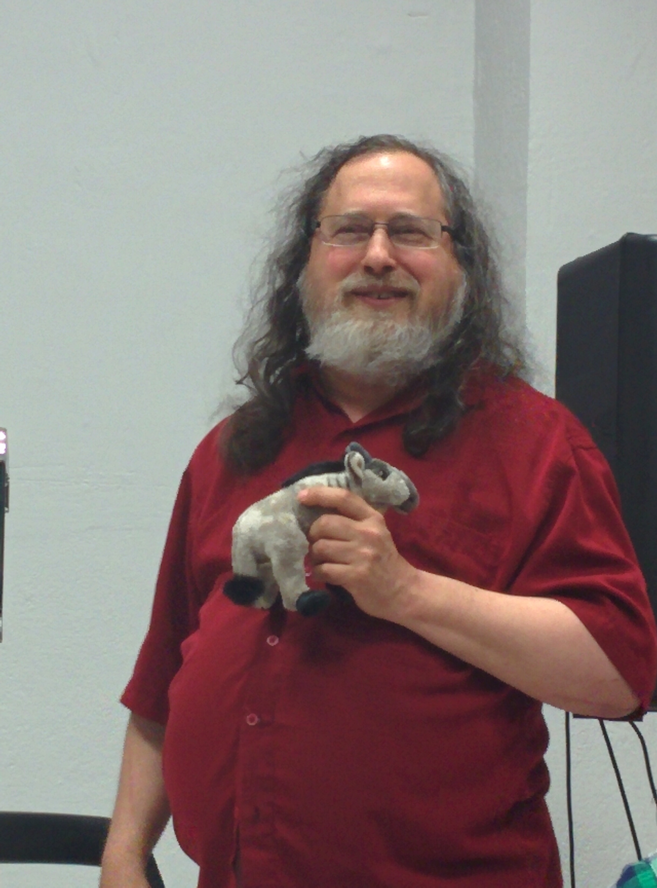
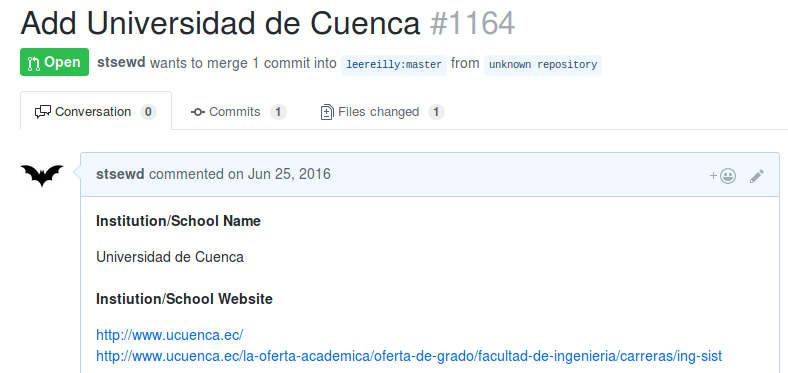
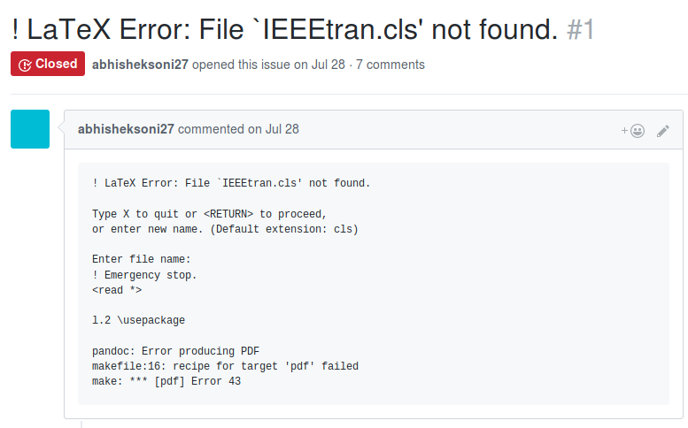
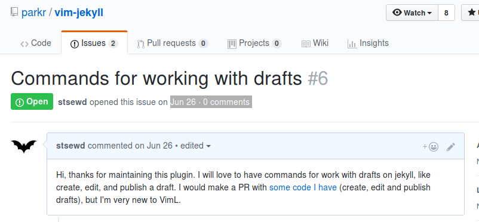
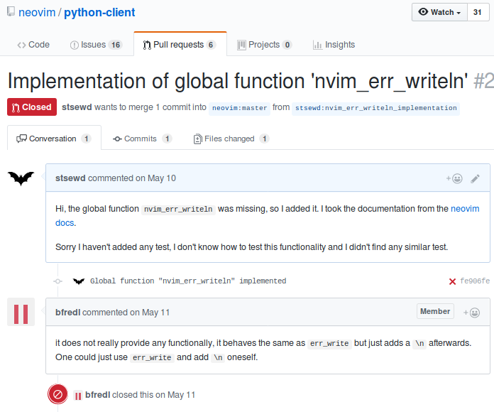

Software libre y de código abierto
(FOSS)
Santos Gallegos
<santos_g@outlook.com>
@stsewd
¿Te imaginas un mundo donde personas de todos los rincones se junten para hacer grandes cosas para el beneficio de todos sin esperar nada a cambio?

¿Qué es FOSS?
Es un software que es distribiudo de tal manera que el usuario tenga la libertad de usarlo para cualquier propósito, estudiarlo, cambiarlo y re-distribuirlo.
En 1985, Stallman fundó la organización Free Software Foundation (FSF).
- Libertad de ejecutar el programa para cualquier propósito.
- Libertad de estudiar el funcionamiento del programa y modificarlo.
- Libertad de re-distribuir copias.
- Libertad de mejorar el programa y compartirlo al público.
“ No es una cuestión de dinero, sino de libertad. ”
Malentendidos
No se gana dinero
Se puede cobrar lo que sea por distribuir software libre, este no deja de ser libre por ello.
Además existen varios modelos de negocios basados en FOOS.
Pierdo mi autoría
El software libre es distribuido bajo una licencia, con el fin de mantener las libertades (también puede ser distribuido al dominio público).
El software libre no es de buena calidad, el privativo es mejor
Depende de varios factores, pero en general ¿Es mejor algo hecho por un par de expertos o por expertos de todo el mundo?
Es difícil de usar
Aveces parece serlo, debido a que los grandes monopolios ponen trabas al software libre (es difícil colaborar con otros que no quieren colaborar).
Sólo los de Argentina en Python lo usan
Desde pequeños nos enseñan que lo único que existe es el software privativo. Lo que conviene a los grandes monopolios.
Beneficios de FOSS
Empresas privadas
- Menor costo de desarrollo.
- Software de calidad.
- Atrae a muy buenos desarrolladores.
- Estándares abiertos.
Educación
- Reducción de costos.
- Conocimiento abierto para todos.
- Enseña a los estudiantes a ser buenos miembros de la comunidad.
- No a la piratería.
Personal
- Aprender y compartir a través de la colaboración.
- Participar en una comunidad que comparte tus mismos intereses.
- Darte a cononer a nivel mundial.
- Privacidad y seguridad.
Mi experiencia
- No entendía del todo sobre FOOS.
- Alguna vez algún profesor mencionó algo, pero parecía que él tampoco lo entendía del todo.
- Me encanta la idea de que el conociniento debe ser libre.

No tengo idea qué estoy haciendo.

Mi primer pull request (2016)
Lo hice mal, aún no lo aceptan. - Subir proyectos de la U.
- Subir proyectos personales.
- Observar otros proyectos.
- Colaborar de vez en cuando con traducciones.
Mi proyecto más popular

2 estrellas, y 2 forks
Un día alguien reportó un error... y ¡me sentí feliz!

